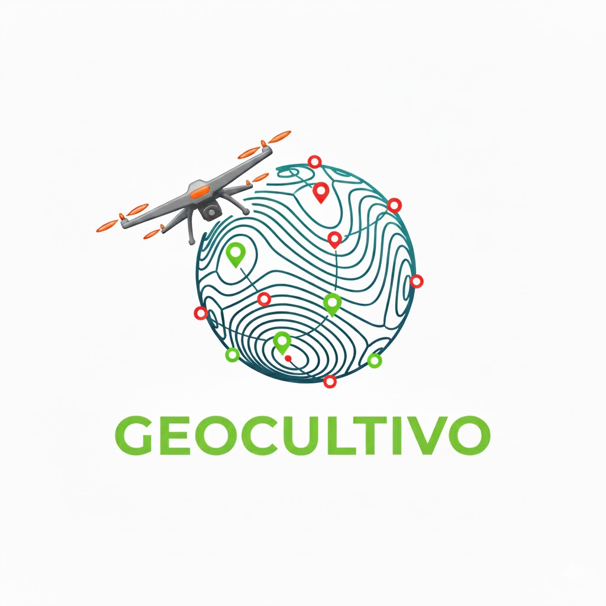
GEOCULTIVO
- Levantamientos topográficos
- Diseño técnico de plantaciones
- Inventarios georreferenciados
- Apoyo para toma de decisiones
SERVICIOS TÉCNICOS
1️⃣ TOPOGRAFÍA INTEGRAL
Levantamiento de alta precisión para planificación de plantaciones.
- Curvas de nivel
- Diseño de loteo
- Ubicación de palmas
- Drenajes: dondis y canales
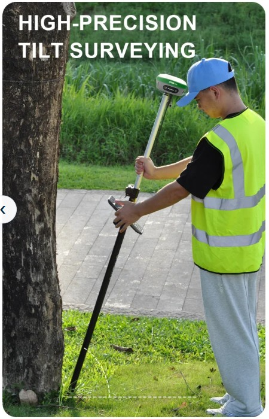
Sma26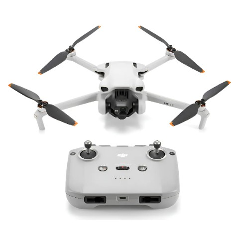
DJI mini 3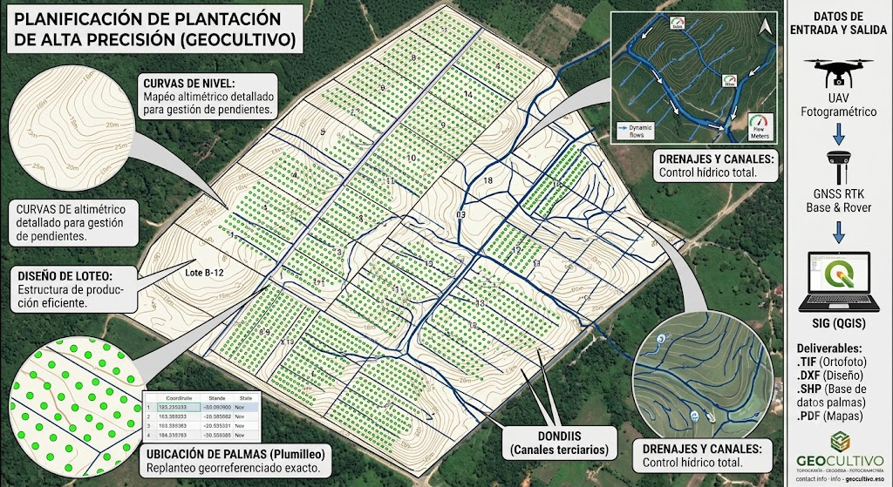
Mapa2️⃣ PLUMILLEO (marcación en campo)
Replanteo de puntos de siembra según diseño aprobado.
- Alineación por líneas y lotes
- Control de precisión en campo
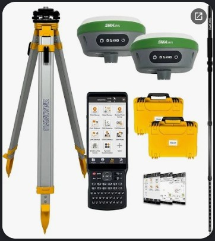
Equipo RTK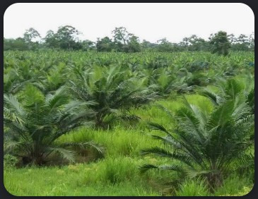
Siembra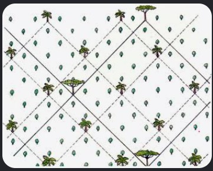
DiseñoSERVICIOS CON DRON
3️⃣ INVENTARIO DE PALMAS CON DRON
Conteo y georreferenciación individual de palmas existentes.
📦 Entregables:
- Shapefile (.shp)
- Imagen .TIF georreferenciada
- Base de datos: coordenadas, lote, línea, estado
- Mapa PDF georreferenciado
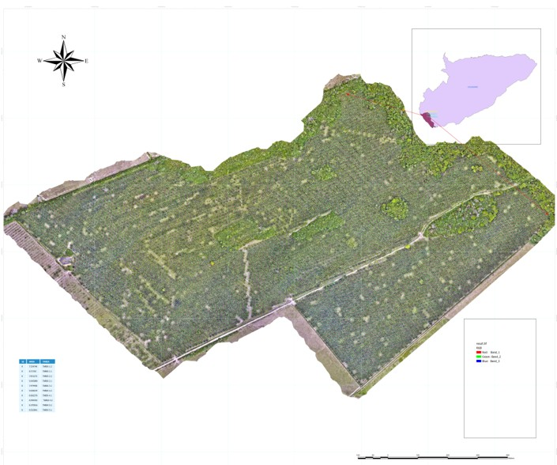
Ortofoto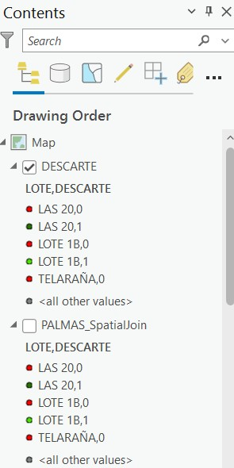
shape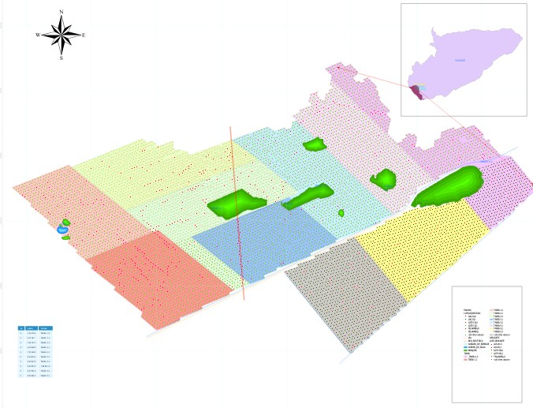
Pdf4️⃣ VUELO DE RECONOCIMIENTO
Diagnóstico rápido y planificación del terreno.
- Ortofotomosaico georreferenciado
- Base para análisis visual/técnico
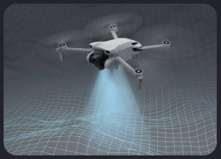
Dji Mini 3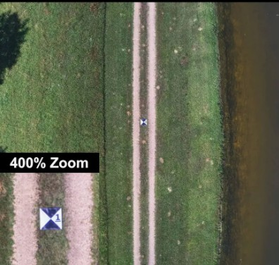
P.Control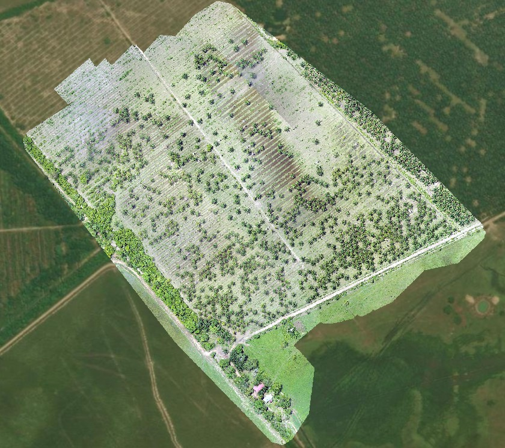
MapaDISEÑO Y EQUIPO
5️⃣ DISEÑO DE PLANTACIÓN
Diseño técnico integral para nuevas plantaciones o replanteamientos.
📋 Requisitos (cliente suministra):
- Ortofotogrametría del área
- Curvas de nivel
📦 Entregables:
- Diseño de loteo
- Canales de drenaje
- Ubicación de palmas por lote
- Archivos compatibles con SIG
6️⃣ CENSO DE PLAGAS Y ENFERMEDADES
Diseño técnico integral para plantaciones.
📋 Requisitos (cliente suministra):
- Mapa del área linea-palma
📦 Entregables:
- Resultados excel censo de plagas
- Resultados excel censo de enfermedades
EQUIPO UTILIZADO
- GNSS RTK – precisión centimétrica
- Dron profesional
- Software SIG (ArcGIS, QGIS)
TIEMPOS Y CONDICIONES
TIEMPOS DE ENTREGA
Definidos según el área total y condiciones del terreno. Se acuerdan previamente con el cliente.
CONDICIONES GENERALES
- ✅ Precios en pesos colombianos (COP)
- ✅ Valores sujetos a ajuste por cantidades y traslados de equipos
- ✅ Propuesta válida previa aceptación del cliente
- ✅ Todos los entregables en formato digital
SOPORTE VISUAL
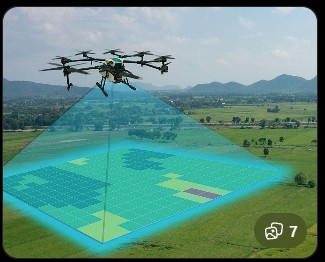
Vuelo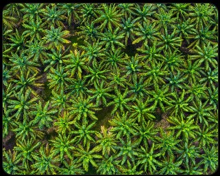
Distribución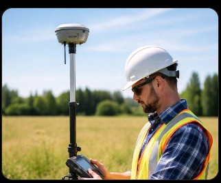
RtkEQUIPOS
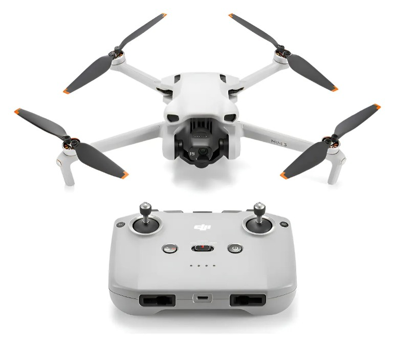
DJI_MINI_3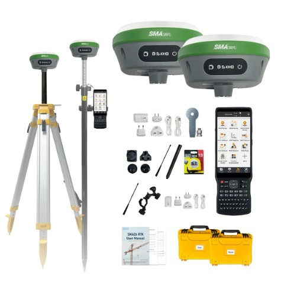
RTK SMA26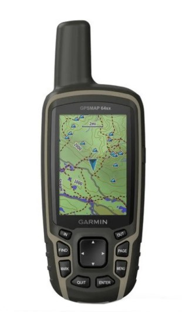
GPSSOFTWARE
 ARCGIS PRO
ARCGIS PRO
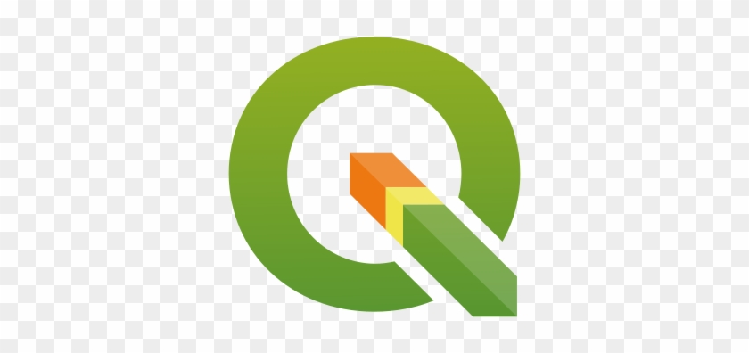
QGIS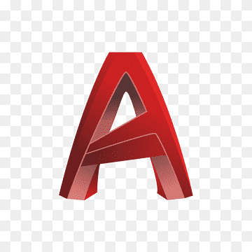
AUTOCAD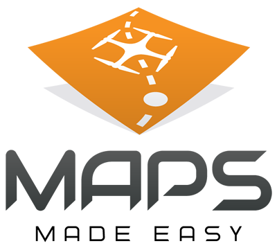
MAPS MADE EASYGEOCULTIVO
Confianza y precisión para tu cultivo